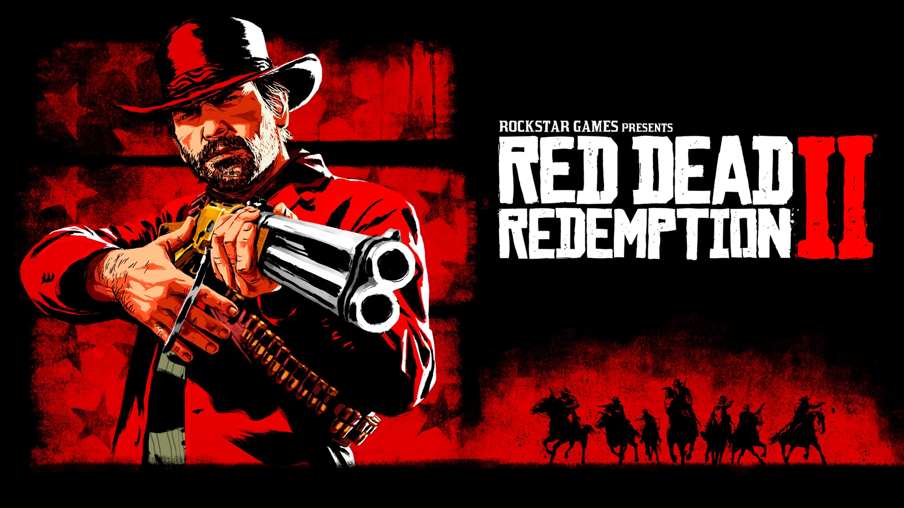

Red Dead Redemption 2 is a critically acclaimed action-adventure game developed and published by Rockstar Games. Set in 1899, it follows Arthur Morgan, an outlaw and member of the Van der Linde gang, as he navigates the decline of the Wild West while facing internal conflict, law enforcement, and the harsh realities of survival.
Experience a vast, living world filled with dynamic events, immersive storytelling, and realistic interactions. Hunt, rob, ride, and survive across rugged landscapes while managing relationships, morality, and the consequences of your choices.
| Component | Minimum | Recommended |
|---|---|---|
| OS | Windows 7 (64-bit) | Windows 10 (64-bit) |
| Processor | Intel Core i5-2500K / AMD FX-6300 | Intel Core i7-4770K / AMD Ryzen 5 1500X |
| Memory | 8 GB RAM | 12 GB RAM |
| Graphics | NVIDIA GTX 770 / AMD R9 280 | NVIDIA GTX 1060 / AMD RX 480 |
| Storage | 150 GB HDD | 150 GB SSD |
Get the official version of Red Dead Redemption 2 from the verified source below:
🔽 Download from Steam